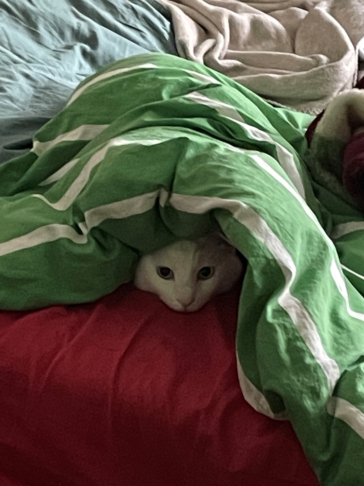
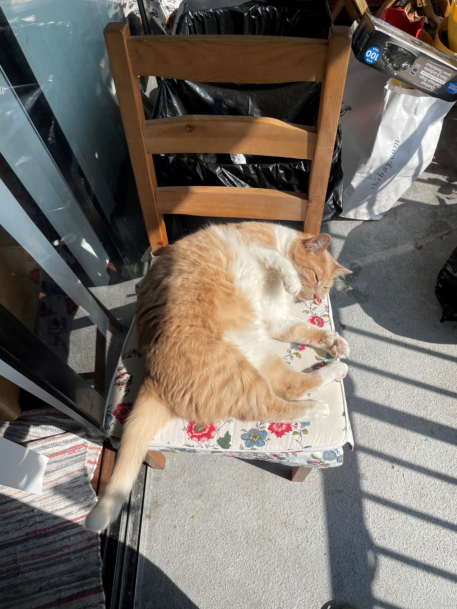

Yupi
A nocturnal blanket enthusiast who prefers having his person nearby. Quiet during business hours; mysteriously productive after dark.
Important stakeholders
A portfolio should still feel like a person made it. These two have contributed moral support, keyboard interference, and rigorous desk-space testing.

A nocturnal blanket enthusiast who prefers having his person nearby. Quiet during business hours; mysteriously productive after dark.

Independent, sun-seeking, and always willing to reconsider solitude when pets are available. Her preferred runtime environment is a warm patch of sunlight.